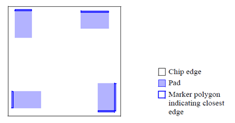

Finding Pad Edges Closest to the Chip Edge
You can identify edges of pads that are closest to the chip edge using marker polygons. This check can be useful for determining which way pads should be oriented.
Figure 1. Pad Edges Closest to the Chip
Edge

Try It!  |
Calibre Advanced DRC (eqDRC) Tutorial and Example Kit Go to this page on Support Center to download the complete eKit. This example is in the miscellaneous_checks/pads_chip_edge example directory. |